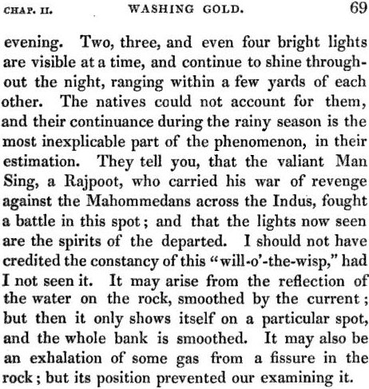
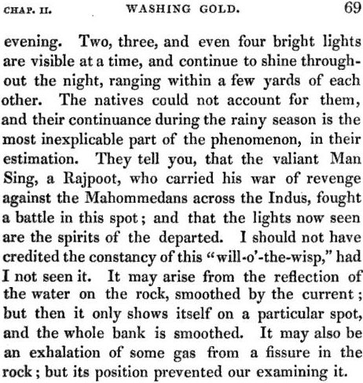
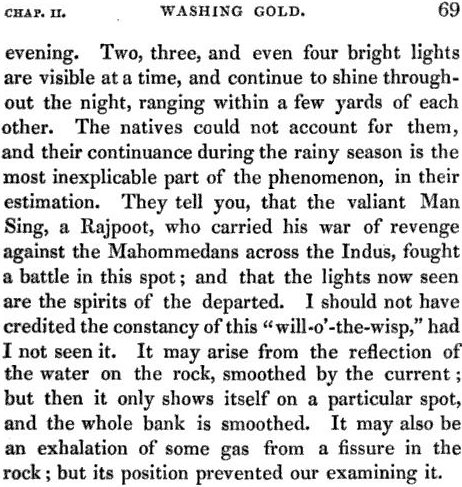
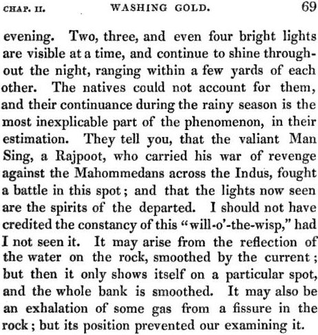

17 mars 1832
Avant de franchir l'Indus, nous avons observé un phénomène singulier à l'embranchement de l'Indus et de la rivière Cabool, où un ignis fattus se montre tous les soirs. 2, 3 et même 4 lumières brillantes sont visibles à un moment, et continuent de briller tout au long de la nuit, éloignées de quelques yards l'une de l'autre. Les indigènes ne pouvaient les expliquer, et leur continuation pendant la saison des pluies constitue la partie la plus inexplicable du phénomène, de leur estimation. Ils vous disent que le vaillant Man Sing, un Rajpoot, qui menait sa guerre de vengeance contre les Mahommedans à travers l'Indus, mena une bataille en cet endroit ; et que les lumières vues aujourd'hui sont les esprits de ceux qui sont partis. Je n'aurais pas crédité la constance de ce "will-o'-the-wisp," si je ne l'avais pas vu. Il pourrait venir de reflet de l'eau sur la roche, polie par le courant ; mais alors il ne se montre qu'en un point particulier, alors que tout le banc est poli. Ce pourrait être aussi l'exhalation de gaz d'une fissure dans la roche ; mais sa position nous a empêché de l'examiner.